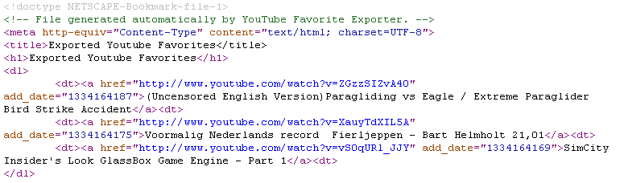

YouTube Favorite Exporter
YouTube Favorite Exporter connects to YouTube and downloads all of your favorites into a file using the Netscape Bookmark File Format. It's built using the Google data APIs.
Here's what it looks like in action -

When complete, a temporary bookmark file is created and opened in your browser

The source looks like this -

The file can be imported into Chrome, Firefox, Internet Explorer, Delicious etc.
Try it for yourself
Download YouTube Favorite Exporter
.NET Framework 2.0 is required.
Source code now available on Github